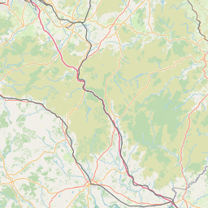
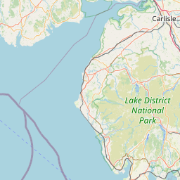
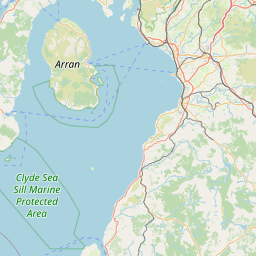
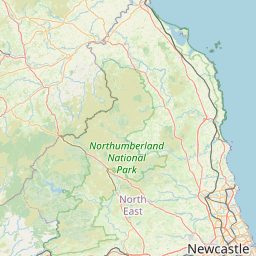
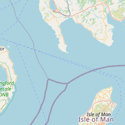
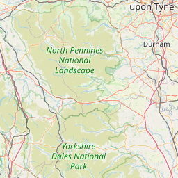

昼の月。AIソムリエ
AIソムリエ
🌐
翻訳
🍷 コンプリートウィスキーコレクション
全
1
銘柄の詳細データベース
昼の月が誇る
厳選ウィスキーコレクション
を
自由に探索してお好みの一本を見つけてください
1
銘柄数
1
産地数
¥3,000〜¥3,000
価格帯
すべての産地
Scotland (1)
すべての価格帯
¥3,000以下
¥3,000〜¥5,000
¥5,000〜¥10,000
¥10,000〜¥20,000
¥20,000以上
すべての味わい
フルーティー (3+)
スモーキー (3+)
スパイシー (3+)
甘味 (3+)
複雑さ (4+)
表示件数:
10件
20件
50件
100件
フィルターをリセット
銘柄名
価格
産地
アルコール度数
スモーキー
フルーティー
複雑さ
サンプルウィスキー
¥3,000
Scotland
40%
★
★
☆
☆
☆
★
★
★
☆
☆
★
★
★
☆
☆
1 - 1 / 1
1
🍸 ウィスキー詳細情報
サンプルウィスキー
Scotland
Single Malt Scotch Whisky
40%
¥3,000
サンプルのテイスティングノートです。
味覚プロファイル
ボトル画像
サンプルウィスキーの画像は現在ありません
画像準備中
蒸溜所情報

サンプル蒸溜所 (Sample Distillery)
Scotland
×
+
−
Leaflet
|
©
OpenStreetMap
contributors
サンプル蒸溜所 (Sample Distillery)
所在地:
Scotland
創業年:
1800
現在の状況:
稼働中
サンプルの蒸留所です。